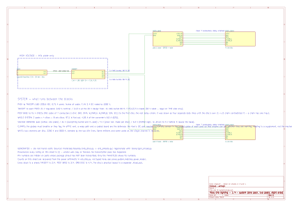
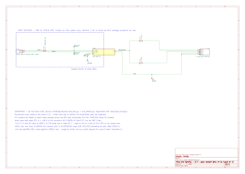
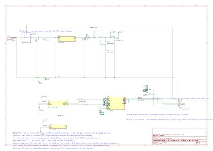
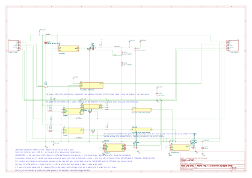
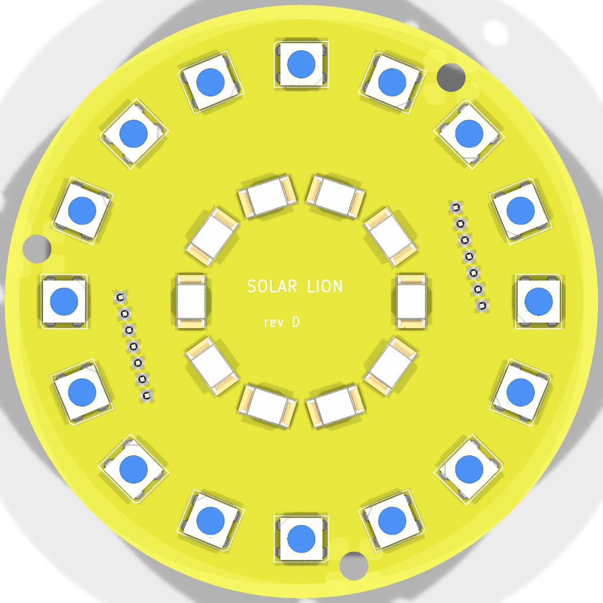
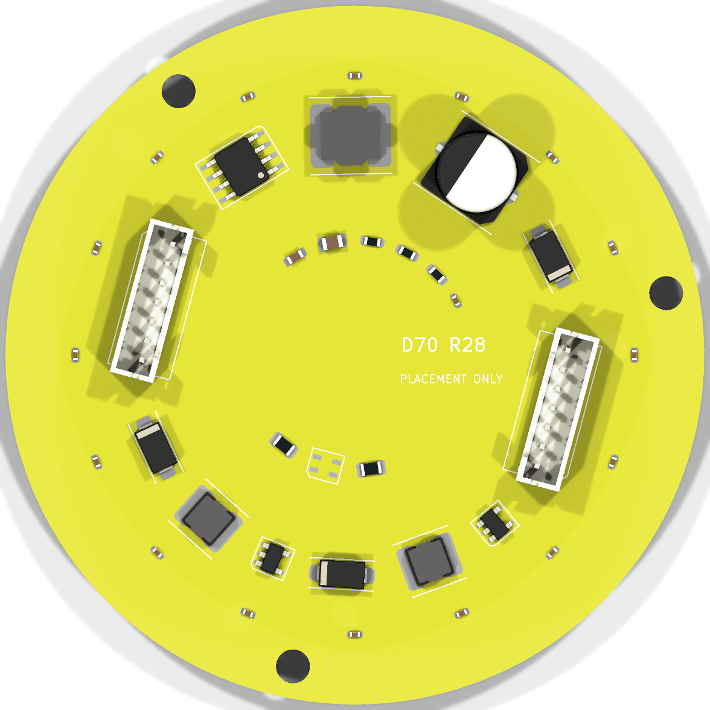
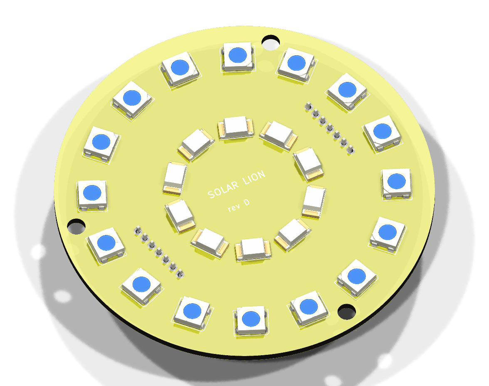
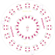
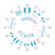

A pair of cast lion lamp posts arrived with no sockets in them. Rather than fit bulbs, each of the eight diffuser spheres gets a circuit board: a ring of individually addressable pixels for effect, and a warm-white cluster for actual light. Power comes off a 20 kWh battery pack — which is the part that makes this an engineering problem rather than a shopping trip. Below: four KiCad schematic sheets, the board itself as a placed 70 mm disc, the mechanical stack that has to fit inside a globe, and the one design decision still open.

One pack, one conversion, two posts, eight orbs. The block diagram is the only sheet that shows what runs between the boards — the lethal side, the buried 24 V pairs, and the seven-conductor riser up each post. Its counts are not typed on it: they are recovered from the power arithmetic in the module, so a diagram claiming three discs a post cannot coexist with a converter sized for four.

The pack runs at 204.8 volts. Feeding that to garden lighting would be both a parts problem — a check against the real bus voltage convicted five of six components outright — and a safety one, since a fault at that voltage sustains an arc. So the voltage is stepped down once, at the battery, and everything from there out is low-voltage. The fuse ahead of it is rated to break DC at that voltage; the common automotive blade fuse is not, and would open into an arc while looking like protection. Its current rating was wrong too, and stayed wrong until a check was written for it: a guess of 4 A, six times the real draw. It is 2 A now.

One controller per post drives four discs as four segments, plus a shared dim line for the white channel. The buffer between them is not decoration: the pixels want 3.50 V to read a logic one and the ESP32 puts out 3.3, which is the gap every tutorial photo ignores and every flickering install rediscovers. A 24 GHz radar wakes the post on approach — through a polyethylene window, because the post is cast aluminium and metal is a boundary condition, not a lossy dielectric.

Each sphere gets a 70 mm board: a ring of 16 addressable pixels for effect, and a warm-white cluster on a constant-current driver for actual light. Current, not voltage, because a resistor ballast on a battery bus dims and brightens with the state of charge. The 5 V rail is made on each disc rather than in the base: a base-fed 5 V loses a fifth of itself in the riser before the first frame.
A schematic has no shape, so it cannot answer the first question anyone asks about this thing: is it actually round, and does it actually fit? Here is the placed board — 70 mm diameter, 16 pixels on a R28 mm ring, ten warm-white emitters inside them, three M3 holes on a R31.8 mm bolt circle. Placement and outline only: there are no tracks and no copper pours on it, and the page says so rather than letting an unrouted board look finished.





The disc lives inside a printed core that sits in the globe's throat, and every dimension in that stack is decided by one measured number: the globe's bore, taken off the real part at 3.165 in = 80.39 mm. Everything else is sized against it, and the margins below are what is left after the process tolerances are stacked — not nominal clearances.
| dimension | value | where it comes from |
|---|---|---|
| globe bore (measured) | 80.39 mm | [M operator, 2026-08-02] — the hole everything must pass through |
| globe neck OD / base opening | 4 in / 4.385 in | [M operator] the fixture's seat |
| disc diameter | 70 mm | sized from the bore; was 80 mm before anyone measured — 0.2 mm a side through a rounded edge |
| board | 1.6 mm, 2 layer, 1 oz, yellow mask | fabpcb.ORB_DISC_PCB — mask colour [M operator, 2026-08-02] |
| bolt circle | R31.8 mm, 3 x M3 clearance 4.0 mm | [X] chosen by the layout — the core's bosses must follow it |
| tallest component | 10.5 mm (C_IN) | measured off the layout; fabfit carried an 8.0 mm placeholder |
| standoff + board + parts | 15.1 mm | against a 16 mm pocket, less the stack |
| core pocket / wall | 72 mm / 2 mm | MJF nylon; wall against the process minimum |
| mechanical proof | what is left after tolerances | |
|---|---|---|
| globe core's pocket clears orb disc after tolerances | 0.50 mm/side (needs 0.40) | pass |
| screws pass through the board into the enclosure's bosses | 0.45 mm (needs 0.40) | pass |
| the pocket is deep enough for standoffs, board and parts | 15.54 mm (needs 15.10) | pass |
| globe core's wall is makeable by MJF nylon | 2.00 mm (needs 1.76) | pass |
| the assembled board-in-enclosure passes the aperture | 2.05 mm/side (needs 2.00) | pass |
The module specified "2700 K high-CRI" and stopped, which is a design decision wearing the clothes of a part number. It is really a choice between three, and the thing that decides it is not cost or optics — it is that the riser has 7 conductors (+24V, GND, DATA, W_PWM_A, W_PWM_B, SDA, SCL) and a second white channel needs a fifth.
| option | colour | dim lines / conductors | extra cost, all 8 | fits the riser |
|---|---|---|---|---|
| 2700 K high-CRI, one channel | 2700 K | 1 / 4 | $0.00 | yes |
| 2200 K high-CRI, one channel | 2200 K | 1 / 4 | $0.00 | yes |
| 2200 K + 3000 K, two channels (tunable) · in force | 2200–3000 K | 2 / 5 | $3.44 | yes |
2700 K high-CRI, one channel — What the module specified before this pass: the domestic warm-white default. It is what an incandescent A19 reads as, so it is the figure nobody argues with and nobody chose. Superseded.
2200 K high-CRI, one channel — The 2026-08-01 recommendation: warmer than 2700 K, closer to the gas lamp these cast posts are imitating, and further from the short wavelengths that pull insects. Same part count, same cost, same riser — it is a bin choice, not a design change. Now the WARM END of the tunable range rather than a fixed point.
2200 K + 3000 K, two channels (tunable) — The cluster is ALREADY two parallel strings of five. Make one string 2200 K and the other 3000 K, give each its own AL8860, and the blend tunes across that range — no extra LEDs, no change to the disc outline, about $3.44 of driver parts across all eight discs [I, 2026-08-01 pricing pass]. It also buys dim-to-warm, which is what makes a lamp read as a flame rather than as an LED being turned down. IN FORCE: the riser carries five conductors and the connectors are five-position, so the second dim line has somewhere to go.
Drawing a bill of materials is a different check from adding one up. These are things the schematic pass convicted that no existing proof was looking at. They are not quietly fixed — inventing parts to make a picture look finished is the failure this whole repo exists to prevent — so each one is drawn on its sheet as a dashed NOT ON BOM block and held open by a proof.
The base's own note puts F1's holder 'at the Kohler bus takeoff' — which is where F_P1 and F_P2 already are. Two boards describe one fuse per post; the BOM buys three. Drawn inside a dashed AT THE PACK box rather than silently dropped, because the fix is a BOM reconciliation between two boards, not a part.
Twice, by two readers that share no code. This repo's own checks run on the sheet and board objects; KiCad's ERC reads the finished files cold and knows nothing about how they were made. Each check ships a deliberately broken control and a test that it fails on it — a check that cannot fail is not a check.
| proof | what it holds | |
|---|---|---|
| system_counts | the diagram's post and disc counts are the power model's | pass |
| no_loose_ends | every wire endpoint lands on a pin, a label or another wire | pass |
| on_grid | every pin and wire endpoint is on the 1.27 mm grid | pass |
| tees_split | no wire ends in the middle of another wire | pass |
| junctions | every wire tee carries a junction dot | pass |
| rails_separate | no two named rails are electrically joined | pass |
| on_paper | every pin and wire sits inside the A3 border | pass |
| covers_bom | the sheet draws exactly the board's BOM, no more and no less | pass |
| well_formed | every pin is on at most one net and every net is real | pass |
| sheet_matches | the drawing induces exactly the declared netlist | pass |
| gaps_declared | every declared gap is drawn and every drawn gap is declared | pass |
| pinouts_not_faked | no symbol prints pin numbers for an untranscribed pinout | pass |
| outline | the drawn outline is the round 70 mm disc the spec claims | pass |
| pixel_ring | 16 pixels sit on one radius at even spacing | pass |
| on_the_board | every courtyard stays inside the routed edge, with margin | pass |
| no_overlap | no two courtyards overlap | pass |
| counts | emitter counts come from the module's topology | pass |
| bolt_circle | the bolt circle clears the pixel ring and the board edge | pass |
| height_budget | the pocket clears the layout's actual tallest part | pass |
| radii_derived | every placement radius is the solved output of its constraints | pass |
| geometry_feasible | a 70 mm disc solves every placement constraint | pass |
| tunable_2200_3000 | 2200 K + 3000 K, two channels (tunable) fits the 7-conductor riser | pass |
| selection_matches_bom | the selected colour temperature is the one on the BOM line | pass |
+24V, where the riser wire had silently attached to the incoming pin instead of the outgoing one. Then it found two captions written as labels rather than notes, with identical text — which is one net, so post 1's feed was shorted to post 2's return through a caption. None of the three is visible in a plot. On the board, KiCad's DRC found the screw terminals' through-holes sitting on the pixel pads on the opposite face — because the overlap test written here compared same-side parts only, and a through-hole part is on both sides. DRC now reports nothing but lib_footprint_issues, which is the generated footprints not being library members.moistlab/boards/orb_disc.py, orb_sheets.py, orb_layout.py and orb_white.py via tools/gen_kicad.py, tools/gen_board.py and tools/gen_lights_page.py. Nothing here is typed twice, so nothing here can disagree with the module. The page this replaced was hand-drawn SVG that had already spent a day quietly disagreeing with it.
{kind=link}
{kind=link}
{kind=link}
{kind=link}